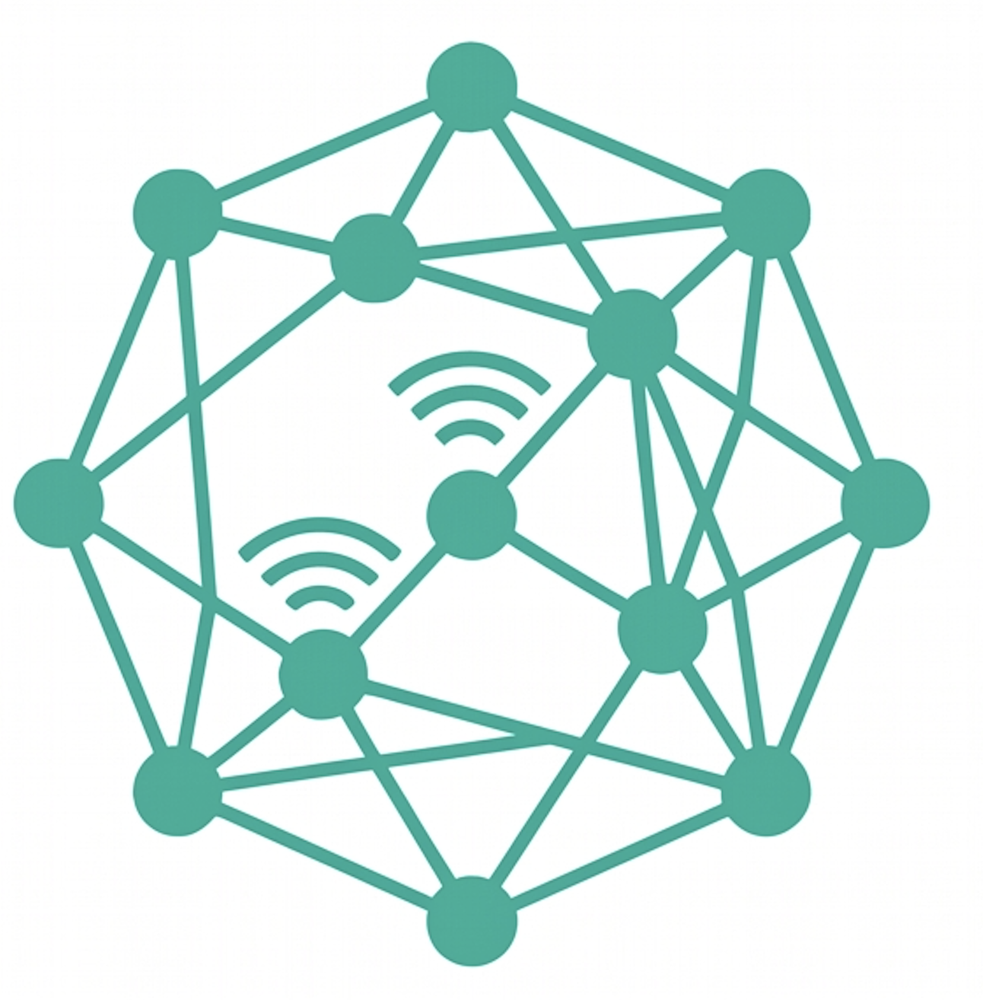
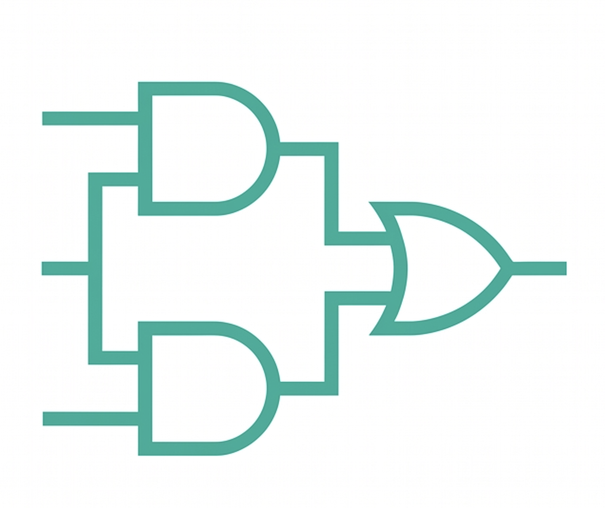
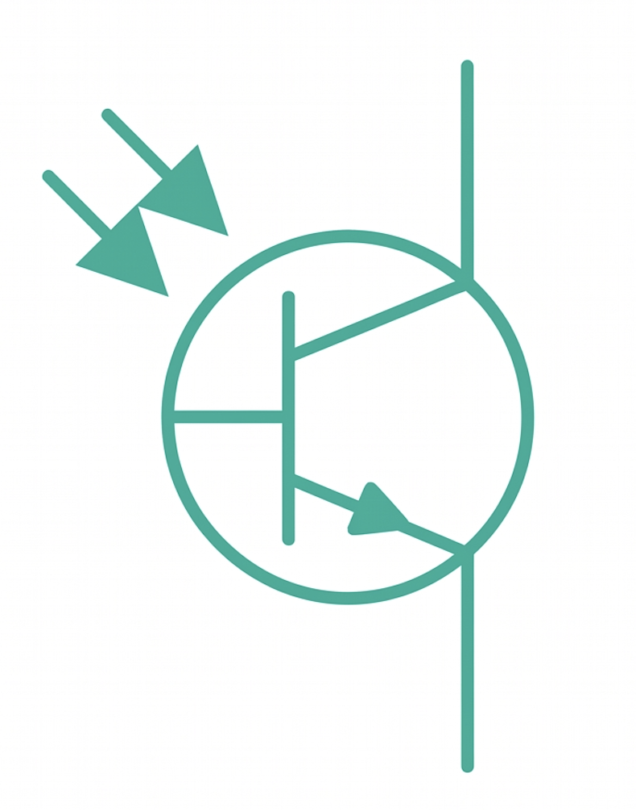
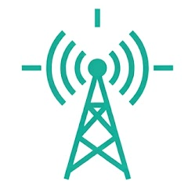
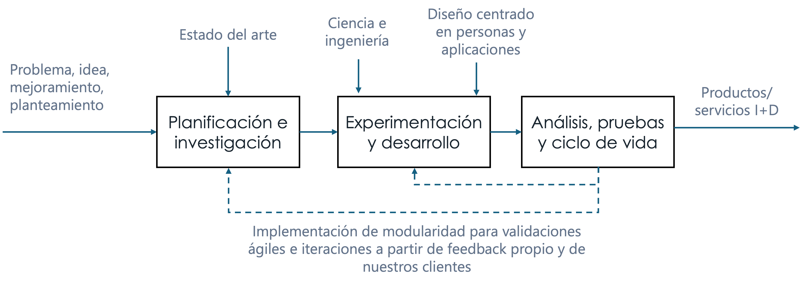
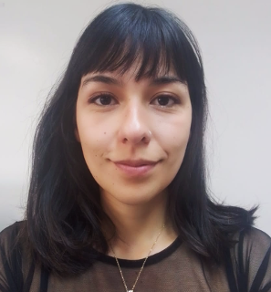
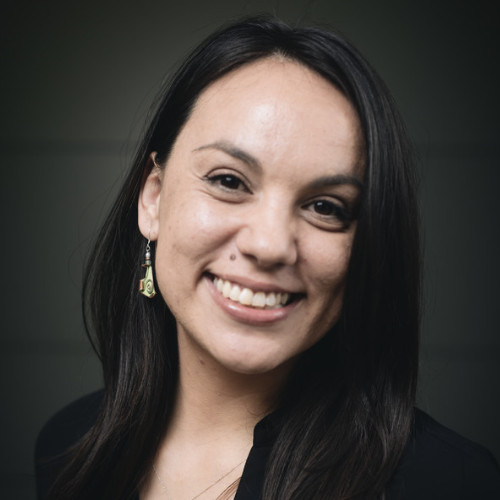
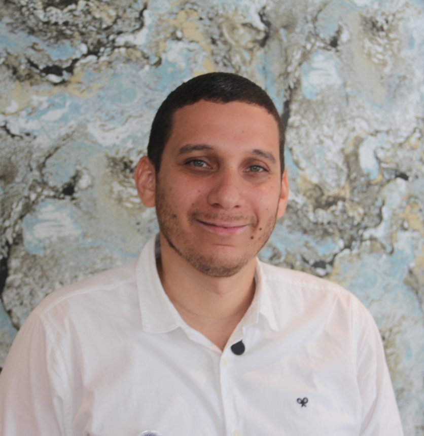
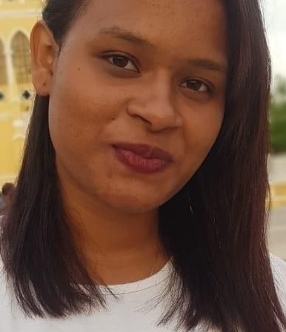

Del Laboratorio al Campo - DLC es una organización orientada al desarrollo tecnológico de alto impacto, la investigación científica y la innovación aplicada. Creamos, prototipamos e integramos hardware, software, IoT y sensores bajo un enfoque centrado en las personas y las empresas. Buscamos que cada desarrollo, desde su conceptualización en el laboratorio hasta su despliegue en campo, responda de manera oportuna a los retos reales de la industria y el sector productivo.

Diseño e implementación de arquitecturas IoT end-to-end adaptadas a contextos urbanos, rurales e industriales para captura de datos y monitoreo en tiempo real. Construimos, prototipamos e integramos dispositivos IoT con autonomía energética, sensores, actuadores y preprocesamiento.

Diseño y desarrollo hardware a la medida mediante componentes electrónicos discretos pasivos/activos y su integración en sustrato, integrando electrónica analógica y digital para requerimientos de operación específicos.

Integración de sistemas para el monitoreo de variables físicas y químicas, sumado a la investigación en fabricación de sensores electroquímicos y sus interfaces (readout y front-end).

Despliegue de redes de área amplia y bajo consumo energético, como LoRaWAN, garantizando sistemas de comunicaciones eficientes en entornos complejos.
Implementamos validaciones rápidas e iteraciones a partir de retroalimentación constante para garantizar soluciones escalables y eficientes.


Directora General
Ingeniera química. Experiencia en educación y procesos STEM, diseño de experimentos y procesos químicos. Cofundadora DLC.

Investigadora Científica
Bioquímica y PhD en bioquímica por Harvard University, Experiencia en procesos bioquímicos, DNA, ensayos/protocolos aplicados a la investigación. Cofundadora DLC.
Investigadora Científica
Ingeniera biológica Universidad Nacional de Colombia, PhD(C) en Biological Systems Engineering por UC Davis. Experiencia en bioprocesos, caracterización de materiales. Cofundadora DLC.
Consultora TI
Ingeniera de Sistemas, maestría en computer science por Worcester Polytechnic Institute. Experiencia en tecnologías de la información, ciberseguridad y arquitectura de sistemas. Condundadora DLC.

Investigador Científico
Ingeniero electrónico, PhD en bioscience engineering por Ghent university y PhD en ingeniería por la Pontificia Universidad Javeriana Bogotá. Experiencia en Sistemas embebidos, IoT, instrumentación electrónica y sensores electroquímicos. Confundador DLC.

Ingeniera de Aplicaciones
Ingeniera electrónica, estudiante de master en IA por la UNIR. Experiencia en ECAD, firmware, IA, IoT, Hardware Testing.
Ingeniero de Aplicaciones
Ingeniero electrónico, Tecnólogo en Automatización Industrial y estudiante maestría en ingeniería por la UTB. Experiencia en ECAD, IoT, hardware testing, desarrollo de interfaces y prototipado ágil.
Rol DLC: Aliado, coejecutor. Implementación de estrategías de apropiación social del conocimiento en el contexto del uso de tecnologías en la agricultura.
Entidad contratante: Universidad Autónoma de Bucaramanga.
Rol DLC: Aliado, coejecutor. Desarrollo de una red de monitoreo de variables climáticas con sistema embebido propio, sensores de bajo costo, soportada en tecnología LoRaWAN y desarrollo de plataforma web integradora de información.
Entidad contratante: Universidad Nacional de Colombia Sede Caribe.
Rol DLC: Aliado, coejecutor. Desarrollo tecnológico e implementación de una red de monitoreo de residuos gaseosos mediante IoT, con sistema embebido propio e interfaz de usuario para análisis y seguimiento de datos.
Entidad contratante: Empresa de Energía del Archipiélago de San Andrés, Providencia y Santa Catalina, EEDAS S.A. E.S.P.
Rol DLC: Contratista, Prestación de Servicios Tecnológicos para la fabricación y desarrollo de dispositivos prototipo de monitoreo IoT para la medición de parámetros fisicoquímicos en cuerpos de agua.
Entidad contratante: Universidad de Cartagena.
Rol DLC: Ejecutor del proyecto. Diseño y despliegue de sistema solar fotovoltaico, tanque elevado, procesos educativos e integración social centrada en las personas.
Entidad contratante: Embajada Suiza en Colombia (Financiador).
Si tienes un desafío industrial o buscas llevar investigación, tecnología e innovación a tu territorio, nuestro equipo está listo para asesorarte.
Email: info@labalcampo.org